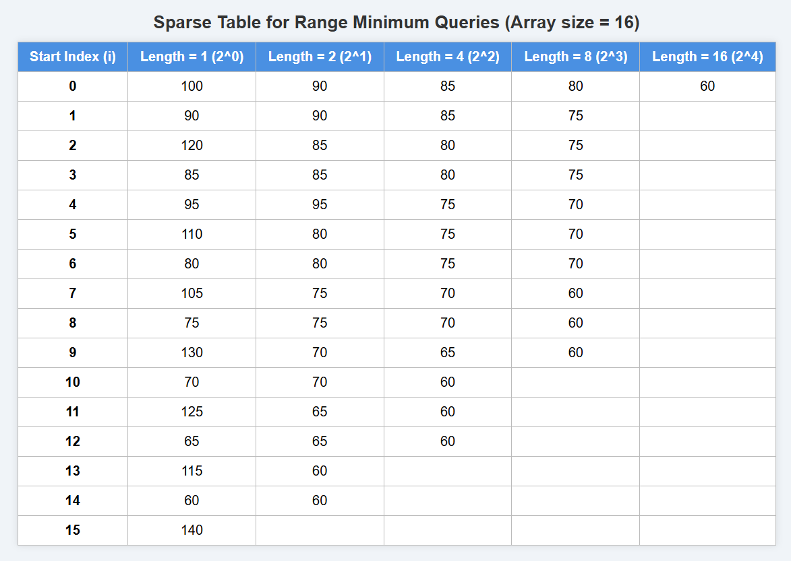

Efficient Querying in Big Datasets Using Sparse Table
1. Introduction
In large-scale data analytics, such as Amazon’s price history analysis, it is crucial to quickly retrieve information about data segments—like finding the minimum or maximum price in a specific time range. Naively scanning the data for each query is inefficient when dealing with massive datasets and numerous queries.
he Sparse Table data structure offers an efficient solution for this problem. By preprocessing the dataset in O(n log n) time, it enables answering range minimum or maximum queries in constant time (O(1)). Although Sparse Tables are suitable for static data (no updates after construction), they are highly effective for applications like price trend analysis, where quick and repeated queries on historical data are required.
Using Sparse Tables, Amazon can provide fast, real-time insights into price fluctuations, helping customers and analysts make better purchasing and pricing decisions.
2. Code Implementation
3.Sparse Table Construction
prices = {100, 90, 120, 85, 95, 110, 80, 105, 75, 130, 70, 125, 65, 115, 60, 140};
4.Finding the Lowest Price in a Given Date Range Quickly
- Imagine Amazon tracks the daily price of a product for 365 days (1 year). Customers and analysts want to quickly find the lowest price between any two dates to decide when to buy or analyze pricing trends.
- The price history is a large array with daily prices.
- Queries come in like: "What was the minimum price between day 45 and day 123?"
- Naively scanning through the array for each query takes
O(n)time, which is too slow for many queries. - Using a Sparse Table, we preprocess the price array in
O(n log n)time. - Then each minimum query can be answered in
O(1)time.
5. Time and Space Complexity
| Phase | Time Complexity | Space Complexity |
|---|---|---|
| Build Table | O(n log n) |
O(n log n) |
| Query Result | O(1) |
O(1) |
6.Applications of Sparse Table in Amazon
Here are real-world applications of Sparse Table in Amazon and similar e-commerce platforms:
-
Price History Analytics
Find the minimum price of a product between two dates -
Inventory Trend Analysis
What was the minimum stock level of a product between two warehouse reports? -
Sales Performance Monitoring
Get the max revenue per product between quarterly intervals. -
Delivery Time Auditing
What was the fastest delivery time between March 1 and May 1 -
Customer Review Monitoring
What is the lowest average rating in the last 60 days?
7. References
-
Halim, S., & Halim, F. (2013). Competitive Programming 3: The New Lower Bound of Programming Contests. Lulu Press. Covers Sparse Table in range query optimization and algorithmic preprocessing.
- GeeksforGeeks – Sparse Table: https://www.geeksforgeeks.org/sparse-table/
- CP-Algorithms – Range Queries: https://cp-algorithms.com/data_structures/sparse-table.html
- Amazon Science Blog – Query Acceleration: https://www.amazon.science/blog
- AWS Big Data Blog – Preprocessed Analytics: https://aws.amazon.com/blogs/big-data/